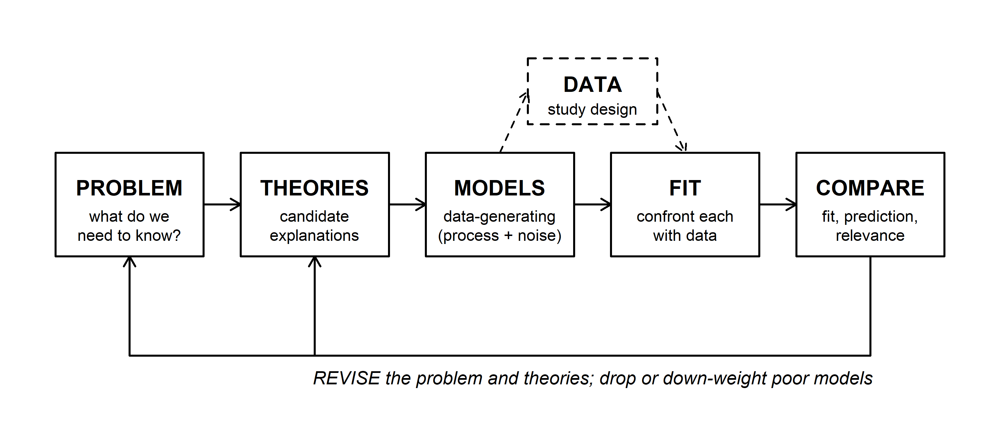

This page has no companion script and no assigned reading. It is a short review of the course followed by a guide to what to learn next, with resources for each topic. Most of the books linked here are free online; where a book is not, the link goes to the publisher's page.
This course taught one skill: writing down a model of how your data came to be, and fitting it. The first part of this page maps the semester onto the modeling workflow. The rest suggests where to go from here: the habits that carry a course skill into a real analysis, the math worth strengthening, causal inference, hierarchical Bayesian models, and machine learning for prediction.

Every model this semester had the same parts: a deterministic function for the signal, a probability distribution for the noise, and a likelihood that connects the two to data. What changed from week to week was how elaborate the parts were and how the fitting was done. The table lists the weeks by the workflow box they belong to.
| Workflow box | What you can now do | Where |
|---|---|---|
| PROBLEM, THEORIES | Start from the question; write rival explanations as rival models | Week 1 |
| MODELS | Choose a deterministic function from the bestiary and a distribution for the noise; simulate data from the result | Week 2, Week 3, Week 4, Week 5 |
| DATA | Use simulation to ask whether a study design can answer the question | Week 6 |
| FIT | Write a likelihood and maximize it; put intervals on the estimates; combine a likelihood with a prior and sample the posterior | Week 6, Week 7, Week 8, Week 9 |
| COMPARE | Check goodness of fit; compare models by likelihood ratio, AIC, and cross-validation; shrink coefficients with a penalty | Week 10, model performance |
| MODELS and FIT, for data that are not independent | Model the variance as well as the mean: random effects, autocorrelation, hierarchical models, smooths, spatial fields, hidden states | Week 11, Week 12, Week 13, Week 14, Week 15 |
Two ideas ran through the second half of the course and are worth keeping in view as you read the rest of this page.
Dependence goes in the model. Trees in one stand, years in one series, and plots near each other on a map share something the covariates do not explain. A random effect, an AR(1) term, a smooth, and a spatial field are all ways of writing that shared part down, and all of them amount to a multivariate normal with a structured covariance matrix.
A penalty is a prior. Ridge and lasso penalties, the variance of a random effect, and the wiggliness penalty on a spline all pull estimates toward something simpler, by an amount the data help choose. Most of the methods in sections 5 and 6 are variations on this.
Question: Pick one analysis from your thesis or project. Which workflow box did you spend the least time on, and what would it have changed if you had spent more?
Real data sets are messier than the ones on these pages, most of which were simulated so that the truth was known. A few habits matter more than any new method.
Decide what the model is for. The same data can serve three different goals, and they call for different tools and different checks.1
| Goal | The question | What counts as success | Where to look |
|---|---|---|---|
| Explain | What would happen to \(y\) if we changed \(x\)? | An effect estimate you can defend against confounding | Causal inference |
| Predict | What will \(y\) be at new sites or times? | Low error on data the model has not seen | Machine learning |
| Decide | Which action best meets the objectives? | A choice that holds up across what you don't know | Decision analysis (below) |
A model built for one goal can be poor at another. The model with the best AIC can give a badly biased effect estimate (see the causal diagrams section of the Week 10 page), and a model with a well-identified effect can predict poorly.
Simulate before you fit. Before trusting a new model on real data, simulate data from it with known parameter values and check that your code recovers them. Every worked example in this course did this. It catches coding errors, shows which parameters the design can estimate, and tells you how much data you need.
Build up from a simple model. Fit the simplest version first, check it, and add one piece at a time. When a complicated model fails to converge, the last model that worked tells you where to look.2
Check the fit against the data, every time. Simulate from the fitted model and compare with what you observed, using residuals, a variogram, an ACF, or a posterior predictive check as the data require. A model that wins a comparison can still fit badly.
Make the analysis reproducible. Raw data are never edited by hand, every figure and number comes from a script, and the project is under version control.3
For management questions, carry the uncertainty through to the decision. A manager rarely needs a p-value. They need to know what is likely to happen under each option and how sure you are. Structured decision making is the framework for this, and ecological forecasting treats prediction as something to be scored and improved over time.4
The course kept the math to what a second semester of calculus and one statistics course supply. More math does not make someone a better ecologist, but four areas pay back the time quickly, because they are what the papers and software manuals are written in.
| Tool | Where it appeared here | What more of it buys you | Where to learn it |
|---|---|---|---|
| Linear algebra | Design matrices, covariance matrices, \(V = ZGZ^T + \sigma_e^2 R\) (Week 11) | Reading any mixed, spatial, or multivariate model; knowing why a fit is slow or singular; eigenvalues for stability and ordination | 3Blue1Brown, Essence of Linear Algebra (videos, for the geometry); Strang's MIT course 18.06 (free lectures and problems) |
| Calculus and optimization | Derivatives for maxima, Newton's method, the Hessian, integrals over densities | Understanding gradients (what Stan, TMB, and neural networks all compute), the Laplace approximation, and why reparameterizing helps |
3Blue1Brown, Essence of Calculus; Deisenroth, Faisal, and Ong, Mathematics for Machine Learning (free; chapters 2-7 cover linear algebra, vector calculus, probability, and optimization at about the right level) |
| Probability | Distributions, expectation, conditional probability, Bayes' rule | Deriving a likelihood for a new sampling design; marginalizing over hidden states; reading a hierarchical model | Blitzstein and Hwang, Introduction to Probability (the book and the Harvard Stat 110 lectures are free online) |
| Differential equations | The logistic curve from a growth rate (Week 2); dynamic models (Week 15) | Building a mechanistic model from rates (growth, transmission, uptake) and fitting it to data instead of choosing a curve by its shape | Otto and Day, A Biologist's Guide to Mathematical Modeling in Ecology and Evolution; 3Blue1Brown on differential equations; Strogatz, Nonlinear Dynamics and Chaos |
If you pick one, pick linear algebra. Every model from Week 11 on was a statement about a mean vector and a covariance matrix, and the documentation for glmmTMB, mgcv, INLA, and Stan assumes you can read one.
Differential equations are the natural next step for anyone whose question is about a process through time (population dynamics, disease, nutrient cycling, hydrology). In R, the deSolve package solves a system of differential equations numerically, and the solution can serve as the deterministic part of a likelihood, just as a bestiary function did. Stan has built-in solvers for the same purpose.5
Watching lectures is not enough for any of these. Work problems by hand, and when a paper gives a model in matrix form, write out the matrices for a toy case with three observations.
Most questions in ecology and management are causal. Does grazing reduce sage-grouse nest success? Did the restoration raise the water table? Would closing the road help? A regression coefficient answers a different question (how does \(y\) differ, on average, between units that differ in \(x\), holding the other covariates in the model fixed?), and the two agree only under assumptions about how the data came to be.
The Week 10 page introduced causal diagrams (DAGs) and showed that the choice of covariates depends on the diagram, not on AIC: adjusting for a confounder removes bias, adjusting for a mediator hides part of the effect, and adjusting for a collider creates an association where none exists. Causal inference is the set of tools for making those assumptions explicit and for designing analyses around them.
| Approach | The idea | An example |
|---|---|---|
| Randomized experiment | Random assignment breaks every arrow into the treatment | Grazing exclosures assigned to plots by coin flip |
| Adjustment from a DAG | Draw the diagram, find a set of covariates that blocks the back-door paths, and condition on it | Effect of fire on cheatgrass, adjusting for elevation and prior cover |
| Matching and weighting | Compare treated units with untreated units that had a similar chance of being treated | Protected vs. unprotected parcels matched on slope, access, and land value |
| Before-after-control-impact, difference-in-differences | Use the change at control sites as the change the treated sites would have shown without treatment | Stream temperature before and after riparian planting, against unplanted reaches |
| Instrumental variables | Find a variable that moves the treatment but touches the outcome by no other route | Distance to a hatchery as a source of variation in stocking |
| Regression discontinuity | Compare units just on either side of an arbitrary cutoff | Parcels just inside and just outside a reserve boundary |
| Structural equation models | Fit the whole diagram, direct and indirect paths together | Precipitation affects grouse through forb cover and through insects |
None of these removes the need for judgment. Each trades one untestable assumption (no unmeasured confounding) for another (parallel trends, a valid instrument), and the diagram is where the assumptions get written down so that others can argue with them.
Where to learn more:
At UNR: NRES 701A, Causal Inference and Analysis (Spring 2027, 2 credits, Kevin Shoemaker and Todd Steury), covers causal diagrams, experiments and quasi-experiments, structural equation models, and time-series approaches, with a project in which each student builds a causal diagram for their own study system. See the draft course website.
Question: A survey of 80 meadows finds willow cover 30% higher where beavers are present, and the beaver term lowers AIC by 14. A colleague wants to report that reintroducing beavers will raise willow cover by 30%. What would you need to know before agreeing?
The Week 13 page fit one hierarchical model in Stan and brms. That is enough to read the literature, and a start on writing your own. Ecological data are a natural fit for this kind of model because they are usually observed imperfectly, grouped (sites, years, individuals, species), and unbalanced. A hierarchical model lets you write a separate piece for the ecological process and for how it was observed, and it carries the uncertainty from each piece into the final answer.
For a standard mixed model with plenty of groups, glmmTMB and brms give nearly the same answer and glmmTMB is faster. The Bayesian version earns its extra computing time when:
| Tool | What it is | Use it when | Limits |
|---|---|---|---|
brms |
Formula interface (lme4 syntax) that writes and runs a Stan program |
The model is a regression with random effects, smooths, or common correlation structures. Start here. | Models that don't fit a formula (custom likelihoods can be added, with effort) |
| Stan | A language for writing any model with a differentiable log posterior; Hamiltonian Monte Carlo | You need a model no package offers: a custom process model, a differential equation, an unusual observation process | No discrete parameters, so latent discrete states have to be summed out by hand (as the Week 15 page did for occupancy) |
| NIMBLE and JAGS | The BUGS modeling language; Gibbs and Metropolis samplers | Models with discrete latent states written directly: occupancy, N-mixture, capture-recapture, integrated population models. Most wildlife population books use this language. | Can mix slowly when parameters are strongly correlated |
INLA and inlabru |
A fast approximation to the posterior, with no sampling, for models whose latent part is Gaussian | Large spatial and spatiotemporal models (Week 14), where MCMC would take days | Restricted to latent Gaussian models; the approximation is hard to check from the inside |
glmmTMB, sdmTMB, RTMB |
Maximum likelihood with the random effects integrated out by the Laplace approximation | Speed matters and priors don't; model comparison across many candidates; very large data sets | Not Bayesian by default; intervals lean on a normal approximation |
A reasonable path: fit with glmmTMB or sdmTMB while you are still choosing the model's structure, move to brms when you need posterior draws or priors, and write Stan (or NIMBLE) yourself only when no package fits the model. brms will show you the Stan program it wrote (stancode()), which is a good way to learn the language.
brms questions too.INLA: Gómez-Rubio, Bayesian Inference with INLA, and Krainski et al., Advanced Spatial Modeling with Stochastic Partial Differential Equations Using R and INLA (both free online).At UNR: NRES 779, Bayesian Hierarchical Modeling, taught each spring by Perry Williams, goes from probability rules to writing and fitting your own hierarchical models. It is the direct follow-up to the Bayesian weeks of this course.
Everything so far in this course asked you to specify the model: you chose the function and the distribution, and the parameters meant something. Machine learning methods take the other route. They learn a flexible function from the data, with the form left mostly open, and they are judged by one thing: prediction error on data held out from fitting.
You have already met the main ideas. Ridge and lasso (Week 10) are machine learning methods, and so is cross-validation as a way to set a penalty. A GAM or a Gaussian process (Week 13) learns the shape of a curve from the data. The random forest page works one method from start to finish.
Machine learning tends to beat a hand-specified model when there are many predictors, the relationships are nonlinear with interactions you could not list in advance, there is a lot of data, and the goal is prediction: mapping habitat, classifying images or sounds, filling gaps in a sensor record.
It is the wrong tool, or at least not enough alone, when you need an effect estimate, when data are few, or when predictions must extrapolate beyond the conditions sampled (a new climate, a management action never tried). The costs to keep in mind:
| Method | How it works, briefly | Typical uses in ecology and environmental science | R packages |
|---|---|---|---|
| Penalized regression (ridge, lasso, elastic net) | A linear model with a penalty on coefficient size | Many candidate covariates and modest sample sizes; a baseline for everything below | glmnet |
| GAMs and Gaussian processes | Smooth curves or surfaces with a wiggliness penalty | Nonlinear responses, spatial and seasonal smooths, with intervals; often competitive with the methods below on small data | mgcv, brms |
| Random forests | The average of many decision trees, each grown on a bootstrap sample | Species distribution and habitat models, land-cover classification, a first pass at which predictors matter | ranger, randomForest |
| Gradient boosted trees | Small trees added one at a time, each fit to the errors of those before | Usually the most accurate method for tabular data: distribution models, fire occurrence, water quality from catchment attributes | xgboost, lightgbm, gbm |
| MaxEnt | Penalized regression on presence-only records against background points (a Poisson point process model) | Distribution models from museum and citizen-science records with no absences | maxnet, dismo |
| Support vector machines | A boundary between classes with the widest margin, made nonlinear by a kernel | Classifying remote-sensing pixels; less used now than tree methods | e1071, kernlab |
| Neural networks (feed-forward) | Layers of weighted sums passed through nonlinear functions, trained by gradient descent | Large tabular or multi-species data sets (joint species distribution models, emulators of slow simulation models) | torch, keras3, cito |
| Convolutional networks and vision transformers | Neural networks built for images and spectrograms | Camera-trap species identification, bird and bat call classification, land cover and tree crowns from imagery | torch; usually pretrained models, often in Python |
| Recurrent networks and sequence transformers | Neural networks built for ordered data | Streamflow and water temperature forecasting, animal movement tracks, sensor gap-filling | torch |
| Unsupervised methods (clustering, ordination) | Find groups or gradients with no response variable | Community composition (NMDS, PCA), defining vegetation types, behavioral states from accelerometers | vegan, cluster, mclust |
Two practical notes. For tabular data (rows are sites, columns are covariates), which is most of what ecologists have, start with a GAM or a penalized regression as the baseline and then try a random forest or boosted trees; deep learning rarely beats them there.7 For images, audio, and text, deep learning is the only serious option, and almost nobody trains a network from scratch: you start from a model someone else trained on millions of examples and adapt it to your data.
The line between the two approaches is also less sharp than it looks. A neural network trained with weight decay is a model fit by penalized maximum likelihood, and the penalty is a Normal prior on the weights, the same result as the ridge prior. What differs is the number of parameters and the fact that they are not meant to be interpreted.
Discussion: A state agency has 12 years of lek counts at 400 leks and 40 candidate covariates. A boosted tree model predicts held-out years with an \(R^2\) of 0.71; a spatiotemporal GLMM with five covariates chosen in advance reaches 0.58. The agency has two uses in mind: mapping where to survey next spring, and deciding whether to restrict grazing near leks. Which model would you hand them for each, and what would you tell them about the other?
Discussion: Which one topic on this page would most change the analysis you are doing now, and what is the first hour of learning it going to look like?
Each of these is a field with its own books. One line and one starting point apiece:
Shmueli (2010, "To explain or to predict?" Statistical Science 25: 289-310) is the standard reference for the first two rows. Breiman (2001, "Statistical modeling: the two cultures" Statistical Science 16: 199-231) argues, with some heat, that statisticians had neglected prediction.↩
Gelman et al. (2020, "Bayesian workflow", arXiv 2011.01808) lays out this way of working at length: prior predictive checks, fitting to simulated data, building models up in steps, and what to do when computation fails. Most of it applies to maximum likelihood too. For presenting a regression-type analysis, see Zuur and Ieno (2016, "A protocol for conducting and presenting results of regression-type analyses", Methods in Ecology and Evolution 7: 636-645).↩
Wilson et al. (2017, "Good enough practices in scientific computing", PLOS Computational Biology 13: e1005510) is a short, practical list. R for Data Science (Wickham, Çetinkaya-Rundel, and Grolemund; free online) covers the data wrangling this course mostly skipped.↩
Conroy and Peterson (2013, Decision Making in Natural Resource Management, Wiley) covers structured and adaptive decision making. Dietze (2017, Ecological Forecasting, Princeton University Press) builds on state-space models like those on the Week 15 page; the Ecological Forecasting Initiative runs forecasting challenges and posts teaching material.↩
Otto and Day is the friendliest way in for biologists: it starts from how to turn a verbal description into equations and teaches the math (equilibria, stability, matrices) as each model needs it. See the "Ordinary Differential Equations" chapter of the Stan User's Guide for fitting.↩
Roberts et al. (2017, "Cross-validation strategies for data with temporal, spatial, hierarchical, or phylogenetic structure", Ecography 40: 913-929).↩
Elith, Leathwick, and Hastie (2008, "A working guide to boosted regression trees", Journal of Animal Ecology 77: 802-813) is still the clearest ecological introduction to boosting. For MaxEnt, see Elith et al. (2011, "A statistical explanation of MaxEnt for ecologists", Diversity and Distributions 17: 43-57).↩